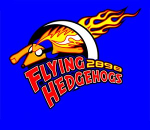

Welcome!
Who are the Hedgehogs?
Housed at the Capital Center in Beaverton, students from other schools inside are invited to partisipate. In the middle of september 2898's club season starts. During club season, meetings occur on Wednesdays from 3 PM to 6 PM. Club Season allows students to learn basic robot building skills in a low pressure environment before the stress of Build Season. The robotics class at School of Science and Technology is another outlet for 2898 to recruit. Team members perform demonstrations of the past season's robot for each class. Team 2898 helps fund this class and suggests class material. This helps foster a large pool of skilled team members.
What is FIRST Robotics?
FIRST (For Inspiration and Recognition of Science and Technology) is an organization which provides three levels of robotics competition for students aged 7-18. Along with teaching practical skills in STEM and business related areas, FIRST promotes the affective needs of students coining phrases such as "Gracious Professionalism" and "Co-opertition." The FIRST Robotics Competition (FRC) is the highest level of robotics competition that FIRST offers. Students have 6 weeks to design and build a fully functioning robot, weighing approximately 120 pounds. You can read more at the First Website.